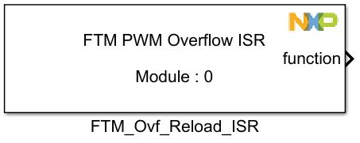

FTM Ovf Reload Interrupt Block
The main functionality of the block is to generate a function call on a timer overflow.
Block Image
Inputs:
- None
Outputs:
- Function-call
Parameters and Dialog Box

Module
Select which FTM module to use.
- Range: 0 – FTMn
Block Dependency
Before using this block a FTM PWM Config Block needs to be added and configured on the same FTMn module. The "Enable Reload Interrupt" checkbox must be enabled and also the "ReloadInterrupt Priority" must be set at the desired value.
Block Miscellaneous Details:
- None